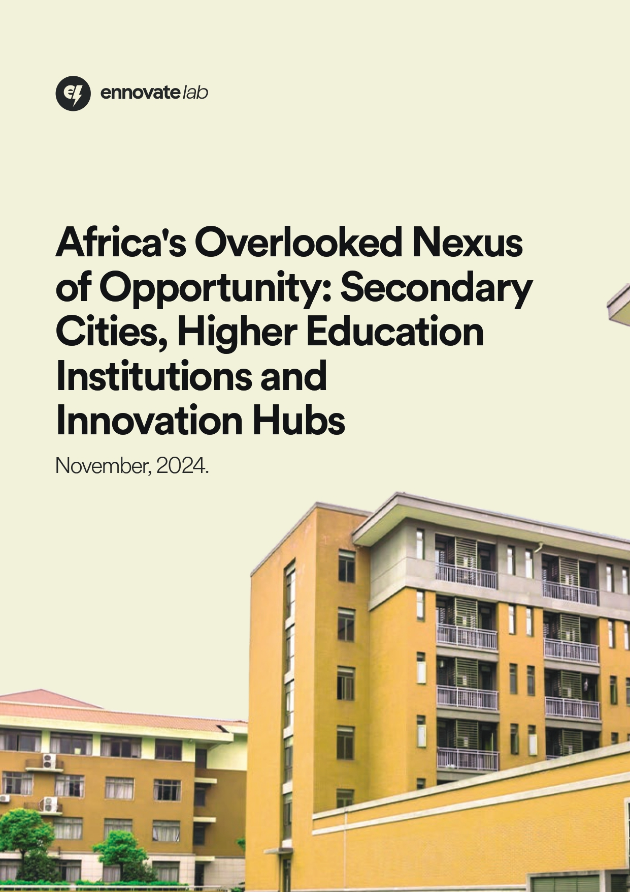

______
Because Places Matter.
Africa's future will be shaped by those who commit, deeply, patiently, and over time, to the places they call home
Scroll to exploreAfrica's future will be shaped by those who commit, deeply, patiently, and over time, to the places they call home
Scroll to exploreWe exist to form people who take responsibility for place, and to build the systems that allow those places to become economically productive, socially coherent, and culturally alive over time.
A growing fellowship of builders, scholars, designers, investors, and civic custodians, committed to the long work of building in the same direction across generations and geographies.
Capital follows capital. Attention follows attention. For decades, the story of African growth has been told through a handful of megacities. Lagos. Nairobi. Johannesburg. Accra. The investors went there. The institutions went there. The infrastructure went there. Everything else waited.
But Africa is not its megacities. Across the continent, hundreds of secondary cities and university towns sit at the intersection of young populations, deep community networks, and genuine intellectual capital. They are not empty. They are not broken. They are underestimated, and largely passed over by the private capital and global institutions that could change their trajectory
What our research found
We looked closely at secondary cities and university communities across the
continent. What we
found was not a problem waiting for a solution. It was an opportunity waiting for
attention. Hundreds of cities. Millions of people. Significant concentrations of higher education, youth,
and
informal economic activity. And almost no
coordinated effort to connect those assets into
something that compounds
Higher Education Institutions across Nigeria, South Africa, and Kenya alone
The window
Africa's population is doubling by 2050.
Secondary cities will absorb the majority of that growth. Whoever shapes those places now shapes the continent's future.
That window is open. It will not stay open forever.
Presence and Absence
The assets are already there
What no one has built yet.
We develop leaders who commit to place over the long term through fellowships, mentorship, and
learning communities.
We build the physical and digital infrastructure that makes places attractive for people and businesses.
EXPLORE 03 / EconomyWe support the development of innovative economies that create value and opportunity for all residents.
EXPLORE 04 / GovernanceWe work to strengthen the capacity of local governments to plan, implement, and sustain place-based initiatives.
EXPLOREOver a decade of ecosystem building. Ennovate Lab has shown what place-based transformation looks like when sustained, patiently, intentionally, in one city at a time
Ecosystem value generated
Ventures supported
Jobs created
Innovation park

Ennovate Lab · November 2024
Secondary Cities, Higher Education Institutions and Innovation Hubs
A deep exploration of why Africa's secondary cities, anchored by universities and
innovation ecosystems, represent the continent's most underleveraged opportunity for
sustainable development.
Talks, roundtables, and field notes that argue, plainly, why
places matter, and what it takes to
build them well.
YouTube · Digital Roundtable Series
YouTube · Amanda Hufford · ODES
YouTube · Place Collective
YouTube · Jesudamilare Adesegun-David
YouTube · Jesudamilare Adesegun-David · TEDxAdo Ekiti
Individuals committed to building in specific
places over time, entrepreneurs, designers,
civic leaders.
Institutions seeking long-term, system-level
impact beyond short-term interventions.
Organizations working in urban development,
innovation, and economic transformation
across Africa.
An invitation
There is a place for you in this collective.